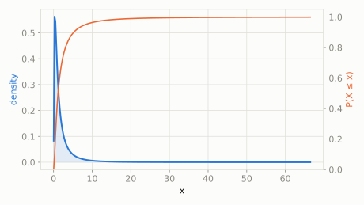

Continuous extended catalog
Double Pareto-Lognormal
scipy.stats.dpareto_lognorm
Intuition
This distribution behaves like a lognormal in the middle (most values cluster around a typical size) but has Pareto power-law tails on both the low and high end -- exactly the shape economists see in real income and city-size data, which look lognormal in the bulk but have fat tails at both extremes.
Formula
\[ f(x;u,s,a,b) = \frac{ab}{a+b}\frac{1}{x}\,\phi\!\left(\frac{\ln x-u}{s}\right)\left(R(y_1)+R(y_2)\right), \quad R(t)=\frac{1-\Phi(t)}{\phi(t)} \]
| parameter | default used here | meaning |
|---|
u | 0 | location of the underlying lognormal core, mu |
s | 1 | spread of the underlying lognormal core, sigma |
a | 2 | right (upper) Pareto tail exponent, alpha |
b | 3 | left (lower) Pareto tail exponent, beta |
Use cases
- Modeling income, wealth, and city-size distributions with two-sided fat tails
- Internet traffic and file-size modeling
A funny example
A kid tracks the price of every item at a school flea market. Most items cost about the same 'typical' amount, following a lognormal hump, but a few are given away for pennies and a rare few sell for way more than anyone expected -- both tails trail off more slowly than a lognormal alone would predict.
What's the probability an item costs more than 5 (in these units), and what's the expected price?
Solve it with scipy.stats
import scipy.stats as stats
import numpy as np
dist = stats.dpareto_lognorm(u=0, s=1, a=2, b=3)
print('P(price > 5):', round(dist.sf(5), 4))
print('expected price:', round(dist.mean(), 4))
P(price > 5): 0.1064
expected price: 2.4731

Theoretical shape at the default parameters above (blue = density/PMF, orange = CDF).